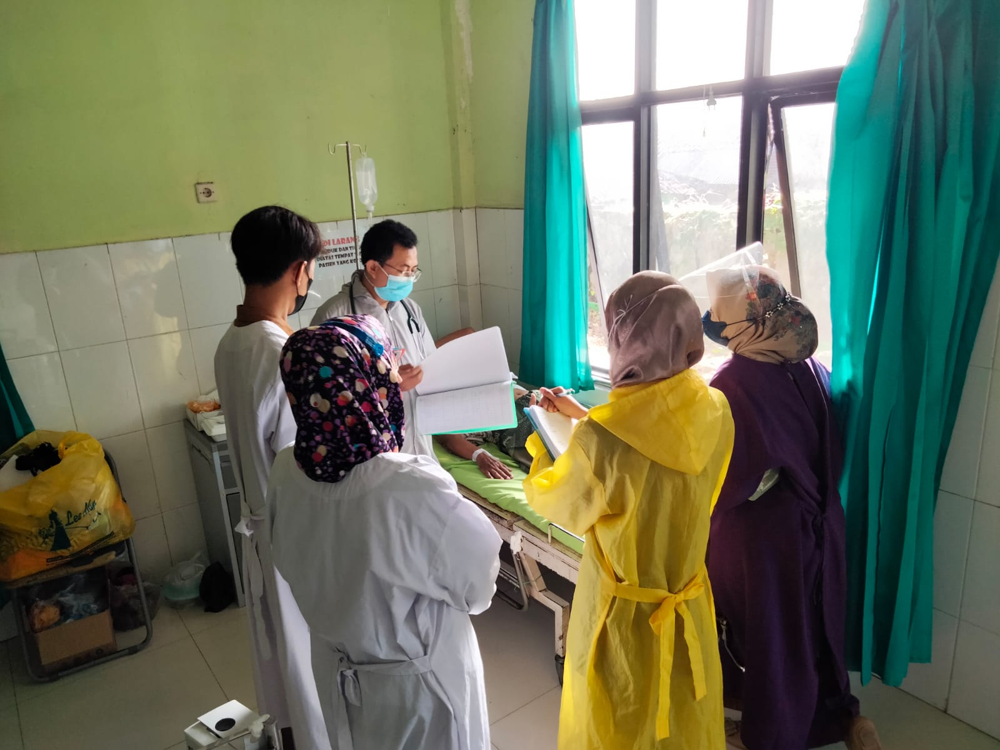
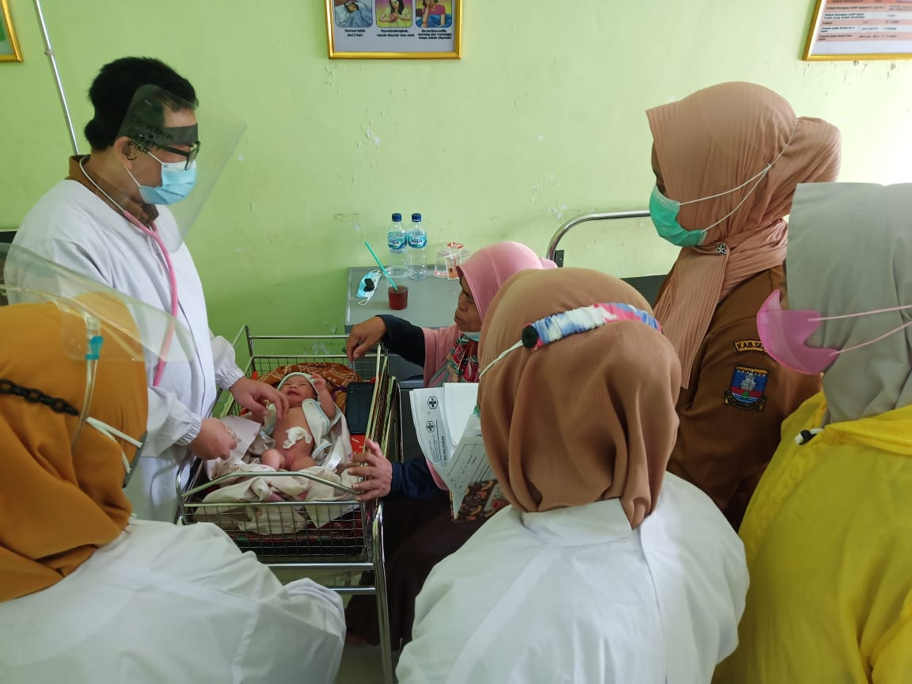
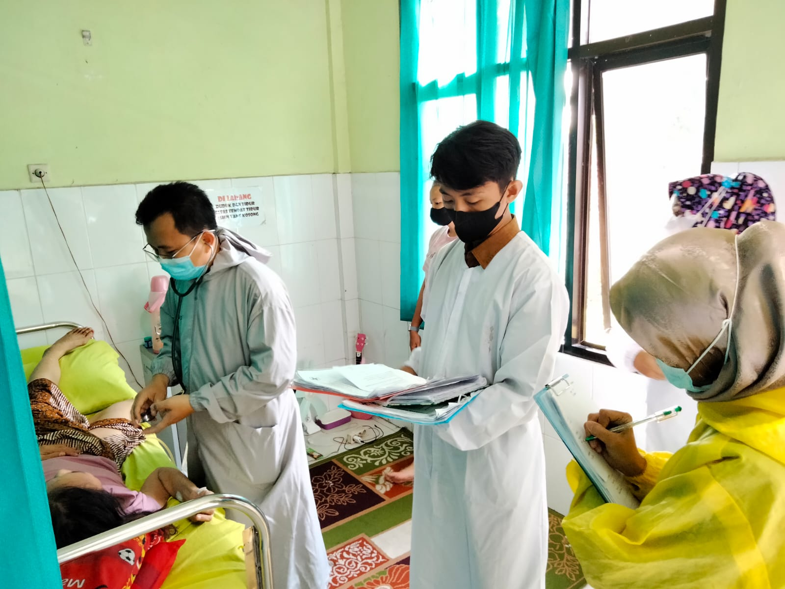

|  |  |  |
Layanan Kami
Terdapat Layanan Kami di UPT Puskesmas Ciruas :
Adalah pelayanan medis kepada seorang pasien untuk tujuan pengamatan, diagnosis, pengobatan, rehabilitasi, dan pelayanan kesehatan lainnya, tanpa mengharuskan pasien tersebut dirawat inap. Keuntungannya, pasien tidak perlu mengeluarkan biaya untuk menginap.
- Pelayanan Pemeriksaan Umum
Balai pengobatan umum (BP Umum ) UPT Puskesmas Ciruas merupakan salah satu dari jenis layanan di puskesmas yang memberikan pelayanan kedokteran umum berupa pemeriksaan kesehatan, pengobatan dan penyuluhan kepada pasien atau masyarakat agar tidak terjadi penularan dan komplikasi penyakit, serta meningkatkan pengetahuan dan kesadaran masyarakat dalam bidang kesehatan. Selama tahun 2019 diperoleh sebanyak 15.859 jumlah kunjungan rawat jalan di BP umum.
- Pelayanan kesehatan gigi dan mulut
Pelayanan kesehatan gigi dan mulut dilakukan untuk memelihara dan meningkatkan derajat kesehatan masyarakat dalam bentuk peningkatan kesehatan gigi, pencegahan penyakit gigi, pengobatan penyakit gigi, dan pemulihan kesehatan gigi yang dilakukan secara terpadu, terintegrasi dan berkesinambungan. Di UPT Puskesmas Ciruas diperoleh sebanyak 4.593 kunjungan rawat jalan di ruang poli gigi.
- Pelayanan KIA & KB
Upaya kesehatan ibu dan anak yang dilakukan dalam gedung yaitu upaya di bidang kesehatan yang menyangkut pelayanan dan pemeliharaan ibu hamil, ibu bersalin, ibu menyusui, bayi dan anak balita serta anak prasekolah.Untuk Jumlah Kunjungan di Poli KIA ada 3244 kunjungan, poli MTBS ada 4173 kunjungan, imunisasi 1073, KB 648 kunjungan.
- Pelayanan Gawat Darurat
Unit gawat darurat atau dikenal juga dengan UGD merupakan salah satu bagian atau departemen di rumah sakit yang khusus memprioritaskan pelayanan pada pasien dengan kondisi yang mengancam nyawa. Tim medis di UGD juga dapat memberi pelayanan medis untuk pasien yang tidak dalam keadaan gawat darurat. Selama tahun 2019 diperoleh sebanyak 4849 jumlah kunjungan UGD di UPT Puskesmas Ciruas.
- Pelayanan Gizi
Pelayanan gizi adalah suatu upaya memperbaiki, meningkatkan gizi makanan, dietetik masyarakat, kelompok, individu atau klien yang merupakan suatu rangkaian kegiatan yang meliputi pengumpulan, pengolahan, analisis, simpulan, anjuran, implementasi dan evaluasi gizi, makanan dan dietetik dalam rangka mencapai status kesehatan optimal dalam kondisi sehat atau sakit. UPT Puskesmas Ciruas, dalam upaya pelayanan gizi masyarakat juga melaksanakan pelayanan gizi dalam gedung berupa Klinik Gizi yang buak setiap hari Jumat.
Pada Klinik Gizi dilakukan konseling dan juga pemberian PMT kepada keluarga atau orangtua yang memiliki bayi balita dengan gizi kurang ataupun gizi buruk.
- Pelayanan Persalinan
Persalinan adalah suatu proses pengeluaran hasil konsepsi yang dapat hidup dari dalam uterus melalui vagina kedunia luar.
UPT Puskesmas Ciruas adalah Puskesmas Rawat Inap Mampu PONED (Pelayanan Obstetri Neonatal Esensial Dasar). Dengan Tenaga 4 dokter fungsional dan beberapa bidan perawat yang sudah pelatihan PONED.
Selama 2019 ada beberapa penyakit pada kehamilan atau persalinan yang ditangani di UPT Puskesmas Ciruas. Lihat Tabel 3.20
Rawat inap adalah istilah yang berarti proses perawatan pasien oleh tenaga kesehatan akibat penyakit tertentu, di mana pasien diinapkan di suatu ruangan di puskesmas. Di UPT Puskesmas Ciruas, selama tahun 2019 diperoleh ada 32.412 kunjungan rawat jalan dari setiap ruang/poli dan ada 721 rawat inap